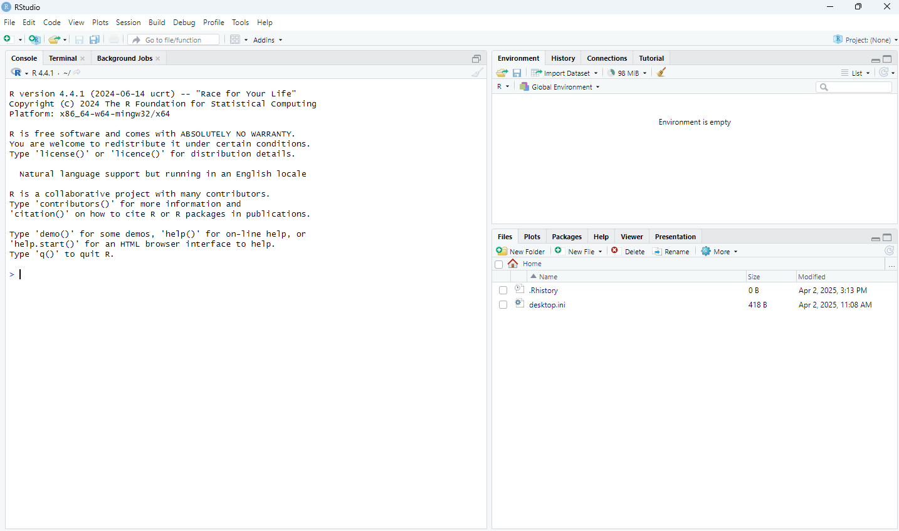
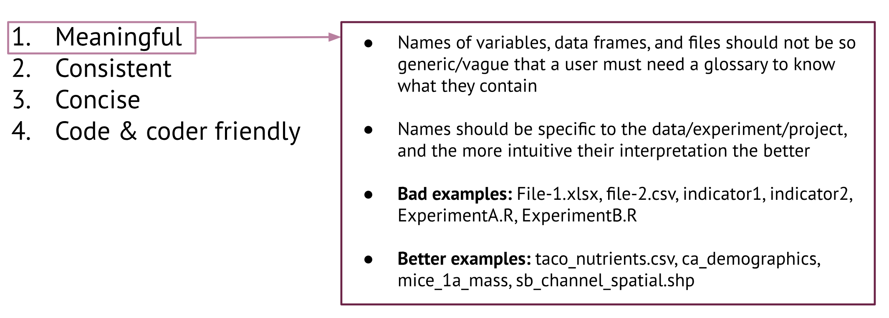
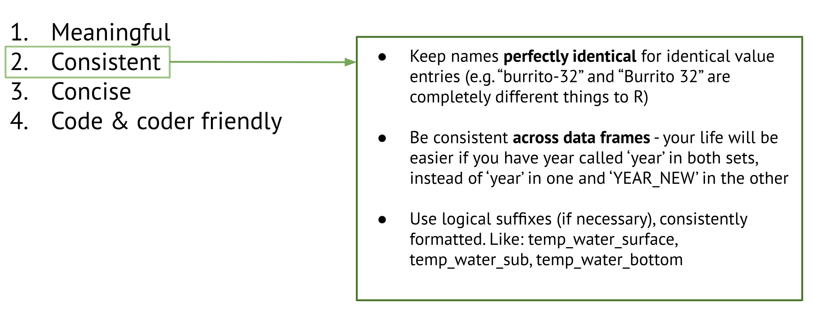
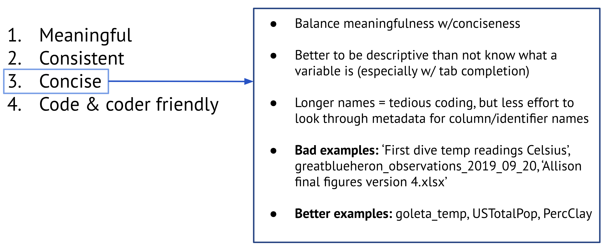
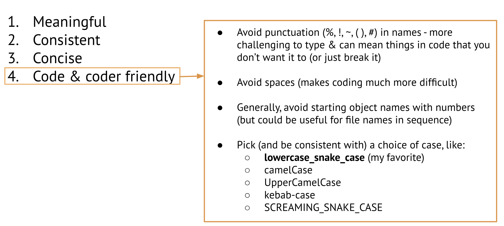
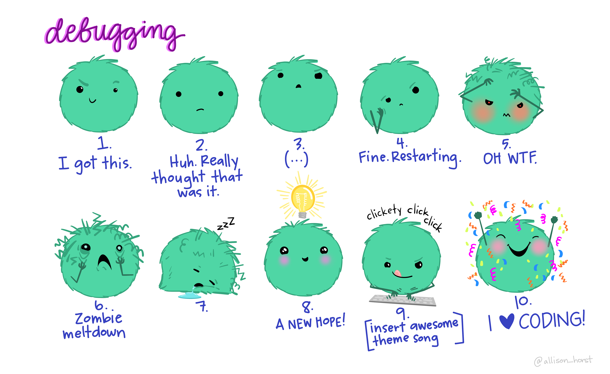

Intro to R Programming
Tour of RStudio
R vs RStudio: What’s the Difference?
R is a programming language used for statistical computing and data analysis. It provides the core functions and packages needed to perform tasks like data wrangling, modeling, and visualization.
RStudio, is an Integrated Development Environment (IDE) for R. It offers a user-friendly interface with tools like a script editor, console, environment viewer, and built-in plotting pane, which make coding in R more efficient and organized.
When you first open RStudio, you’ll see the following panes:
- Left Pane: The Console is where R executes your code. You can enter commands directly for immediate feedback, making it ideal for testing individual lines of code, inspecting data structures, or running quick calculations during exploratory data analysis.
- Top-Right: The Environment pane provides a real-time overview of the objects currently stored in your R session, including datasets, functions, and variables. It allows you to monitor your workspace as it evolves and serves as a helpful reference when managing data throughout your workflow.
- Bottom-Right: The Tools multipurpose pane gives access to a range of utilities: data visualizations (Plots), your working directory (Files), package documentation and function references (Help), and output previews from R Markdown documents or Shiny applications (Viewer). It is especially useful when combining scripting with documentation or interactive tools.
- Top-Left: The Source pane is where you develop and edit your code and documentation. It supports a variety of file types, including R scripts (
.R), R Markdown (.Rmd), Quarto documents (.qmd), and Jupyter Notebooks (.ipynb). This pane allows for building reproducible workflows, writing narrative reports that integrate code and results, or developing interactive notebooks for teaching and analysis. Its tabbed interface allows for easy navigation between multiple files. Note: We don’t see this pane open in this screenshot, but that’s because we don’t have any files open yet!
Coding in the Console
But first, an important question: where are we?
When you first open RStudio, you’re placed in your Home directory. You’ll notice this location indicated by the tilde symbol (~) at the top of the Console. This symbol is shorthand for your user’s home folder and is the starting point for your R session.
In the Files pane (bottom-right), you’ll see a visual representation of the contents of your Home directory. You can click through folders and browse your file system from here. However, it’s important to understand that navigating through the Files pane doesn’t change your working directory in R. In other words, no matter how deep you click into subfolders, R will still consider your location to be ~ until you explicitly tell it otherwise by opening an R Project.
At its most basic, we can use R as a calculator:
# run each expression in the Console
2 + 5
400 / 10
(6 - 1 + 8) / 3
sin(pi / 2)Use the up arrow key to bring back the last code we ran in the Console, in this case: sin(pi / 2). Delete the closing parenthesis and notice what happens.
> sin(pi / 2
+The Console has changed the prompt from > to +. This means R is waiting for more input to complete the command. We often see this when we forget to close a parenthesis, quote, or bracket.
To fix this, we can either:
- Finish the command by typing the closing parenthesis and pressing Enter, or
- Press Esc to cancel the incomplete command and return to the standard prompt (
>).
The + prompt is a helpful clue when debugging code as it usually means R is expecting more syntax to complete the command.
Creating Objects in R with the Assignment Operator (<-)
In R, most of the time you’ll be creating objects and this is done using assignment statements using the assignment operator, <-.
# run this code in the Console
# human translation of this code: "object x gets value of 3 * 4"
x <- 3 * 4
# after you hit Enter, what happened?
# call "x" to view the value you've assigned itAssignment statements follow a consistent pattern:
object_name <- valueYou’ll write a lot of assignments, so it’s worth getting comfortable with this syntax. While you can use = to assign values, it’s best to stick with <-. Using = can lead to confusion, especially when calling functions, where = is used to specify arguments.
To make typing <- easier, use RStudio’s built-in keyboard shortcut: Alt + - (minus sign)
RStudio will insert spaces around <- automatically, which is a great formatting habit. Clean code is easier to read - for you, your future self, and your collaborators. Let your code breathe and use spacing to make your code more understandable:
# write your code like this
my_value <- 5
# not like this
my_value<-5
my_value=5Naming Things
When naming objects, observations, data frames, or files make them:

Slide credit: Allison Horst EDS 221: Scientific programming essentials for the Bren School’s Master of Environmental Data Science.

Slide credit: Allison Horst EDS 221: Scientific programming essentials for the Bren School’s Master of Environmental Data Science.

Slide credit: Allison Horst EDS 221: Scientific programming essentials for the Bren School’s Master of Environmental Data Science.

Slide credit: Allison Horst EDS 221: Scientific programming essentials for the Bren School’s Master of Environmental Data Science.
Coding in an R Script
So far, we’ve been running code directly in the Console, which is great for quick experimentation. Now let’s try using an R Script instead.
An R Script is simply a plain text file where you can write and save your R code. When you run code from an R Script in RStudio, it behaves just like typing the same commands into the Console. RStudio takes the code and sends it line by line to the Console for execution.
Using an R Script is helpful for keeping your work organized, reproducible, and easy to edit or rerun later. It’s a best practice for writing and saving longer pieces of code or entire analysis workflows.
How to Run Code from an R Script
Running code from an R Script works a little differently than running code directly in the Console - you can’t just press Return or Enter. Instead, you need to send the code from the script (in the Source pane) to the Console, where R will interpret and run it.
Here are some common ways to do this:
Run a single line of code: Place cursor on the line to run, then press
Ctrl+Enter(Windows) orCommand+Return(Mac), or click the Run button in the top-right corner of the Source pane.Run multiple lines of code: Highlight the block of code you want to run, then use the same shortcut (
Ctrl+EnterorCommand+Return), or click the Run button.To run the entire script you can either: Press
Ctrl+Shift+Enter(Windows) orCommand+Shift+Return(Mac), or go to the top menu and choose Code > Run Region > Run All.
R Executes Code from Top to Bottom
When you run an entire R Script, R reads it from top to bottom, line by line. This means the order of your code matters—objects must be created before they’re used, and functions must be defined before you call them. Keeping your script well-organized and logically ordered is key to avoiding errors.
R Calculations with Objects
So we know that objects are how R stores information, and we know we create objects using the assignment operator <-. Let’s build upon that and learn how to use an object in calculations.
Imagine we hired a taxi and after the trip, paid a fare of $18.75. Let’s create an object for the taxi fare and assigned it the total fare paid.
# total taxi fare
taxi_fare <- 18.75Now that R has taxi_fare saved in the Global Environment, we can run calculations with it.
You’re not limited to storing just one value in an object - you can also store a series of values, which allows you to apply the same operation across all of them at once. This is especially useful when working with related measurements, like a group of taxi fares.
To create an object that holds multiple values, we use the c() function, which stands for combine or concatenate. Let’s use it to make a vector of taxi fares:
# vector of taxi fares
taxi_fares <- c(18.75, 15.38, 20.42)
# call object to inspect
taxi_faresWe’ll dive deeper into vectors in the upcoming Data Structures in R section.
What if we want to use the new values we calculated later? It would be much more efficient to save them instead of repeating the calculation each time.
# create a new object
fares_with_tip <- taxi_fares * 1.15
# call `fares_with_tip` to check if the information you expect is there
fares_with_tipLogical operators and expressions
We can ask questions about an object using logical operators and expressions. Let’s ask some “questions” about the taxi_fare object we made.
==means “is equal to”!=means “is” not equal to<means “is less than”>means “is greater than”<=means “is less than or equal to”>=means “is greater than or equal to”
# examples using logical operators and expressions
taxi_fare == 18.75
taxi_fare >= 30
taxi_fare != 5Data Types in R
Most common data types we’ll find in R:
| Data Type | Definition |
|---|---|
Numeric Integer, float, and double are subsets of numeric |
In general, these are numbers (e.g., 15.7 or -0.98) Integers are whole numbers, created with an L suffix (e.g., Float and Double are both decimal number types. In R, numbers are usually stored as 64-bit doubles, offering more precision than 32-bit floats. You typically don’t need to worry about the difference, but floats can be useful when optimizing memory or working with tools that require 32-bit values. |
| Character | Non-numeric letters or symbols and numbers stored as characters (think IDs). Sequences of characters are typically called strings (e.g., “Hello World”). |
| Logical (Boolean) | Holds only one of two values: either Temporary logicals are an important part of data wrangling (e.g., matching conditions to subset data). |
| Factor | Distinct data type for representing categorical variables, levels can be:
|
Less Common Data Types in R
| Data Type | Definition |
|---|---|
| Complex | This data type represents numbers that have both real and imaginary parts, such as 2 + 3i. These are useful for mathematical computations involving complex numbers, often seen in engineering and physics. |
| Raw | This type stores data as raw bytes, typically used for handling binary data or working with lower-level operations like file manipulation. |
Creating & Working with Data Types
Data Structures in R
When we combine multiple data types, we create data structures. We’re going to discuss three data structures in R: (Atomic) Vectors, Lists, and Data Frames.
1. (Atomic) Vectors
An atomic vector is a flat sequence of elements, all of the same type.
Atomic vectors are the most common type of vector in R, and you’ll encounter them frequently. Vectors serve as the building blocks for many other data structures in R, including data frames.
Properties of vectors:
- Type (e.g. character, numeric, logical)
- Length (how many elements in the vector?)
- Attributes (associated metadata)
Vectors can only contain a single data type. If different elements are added, the “most flexible” will be assigned to all elements in the vector.
Data types from least to most flexible are: logical, integer, double, and character.
Indexing Vectors
Indexing means accessing elements from a data structure.
For a vector (or a one-dimensional array), we access an element by position using square brackets [].
Important to note that in an R vector, the first element position = 1. This is different from other languages, like python, that use a zero index where the first element in a vector is position = 0.
2. List
A list is a flat sequence of objects, each of which can be anything — including other lists!
To create a list we use the function list():
metro_bike <- list("e-bike", 29, "green", 36L)
# check with a logical test
is.list(metro_bike)
is.vector(metro_bike)Unlike vectors, which require all elements to be of the same type, lists are flexible structures that:
- are ideal for storing complex or heterogeneous data types,
- allow each element to be named (helpful for organizing and accessing structured data),
- are often used to return multiple outputs from functions or to store results such as model outputs.
Indexing Lists
Like vectors, list elements can be accessed by their position using square brackets. However, unlike vectors, lists offer two ways to extract elements:
- using a single pair of square brackets
[], which returns a list or object, - or a double pair
[[]], which returns the elements within the list.
In a named list, you can also access elements by name.
A more realistic example of how a list can store outputs from a model:
# mtcars is a pre-loaded dataset in R #
# fit a linear model
model <- lm(mpg ~ hp, data = mtcars)
# check the type of object
class(model) # lm
is.list(model)
# peek inside the list
names(model)
# access model coefficients
model$coefficients3. Data Frames
A data frame is a list of equal-length vectors, organized into a two-dimensional tabular structure where:
- Each column is a vector.
- All vectors (columns) must be the same length.
- Each vector can be of a different type (numeric, character, logical, etc.).
A data frame is the most common data structure in R and with tidy data makes data analysis easier.
To create a list we use the function data.frame():
ladot_employees_df <- data.frame(
name = c("Mia", "Alex", "Joe"),
years_employed = c(12, 1, 5),
civil_service_appt = c(TRUE, FALSE, TRUE)
)Indexing Data Frames
Like vectors and lists, elements within a data frame can be accessed using square brackets. However, unlike vectors and lists, data frames are two-dimensional structures, so elements are accessed using a row and column index in the format [row, column].
Functions in R
What’s a function?
A function is a self-contained piece of code that takes input(s), performs a specific task, and returns an output
R has a large collection of built-in functions, and all functions are called using the same basic syntax:
function_name(argument_1 = value_1, argument_2 = value_2, ...)You call a function by writing its name, followed by parentheses that include any information the function needs — these are called arguments. Arguments are the inputs that tell the function how to do its job. Some functions only need one argument, while others can take several. Knowing what arguments a function expects (and in what order or format) is key to using it effectively and getting the result you want.
Help Pages
How do we learn more about a function and the arguments it takes? We look at the help documentation! This is especially useful when you’re working with a function you haven’t used before or want to understand all the available arguments.
Let’s open the help page for mean(), type this in your Console:
?meanThis will open the Help pane in the lower-right corner of RStudio, showing detailed information about the function. Here’s how the help page is usually organized:
- Description: A short overview of what the function does.
- Usage: The function’s syntax, including its arguments and default values.
- Arguments: A breakdown of what each argument means and expects.
- Details: Additional context or edge cases to be aware of.
- Value: What the function returns after it runs.
- See Also: Links to related functions you might want to explore.
- Examples: Ready-to-run code samples that show the function in action.
Need more help? Many packages include vignettes - detailed guides on how to use their functions. Google package_name vignette (e.g., dplyr vignette) or check the package’s CRAN page for links.
Bonus: Help with Debugging
When the debugging blues start to hit…reach out for help! I highly recommend the workshop Teach Me How to Google by Sam Csik. It’s packed with practical tips to level up your troubleshooting game.
Remember: feeling frustrated and even walking away from your code is totally normal. It’s all part of the process.
